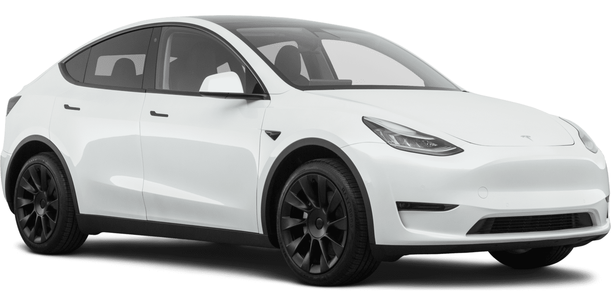
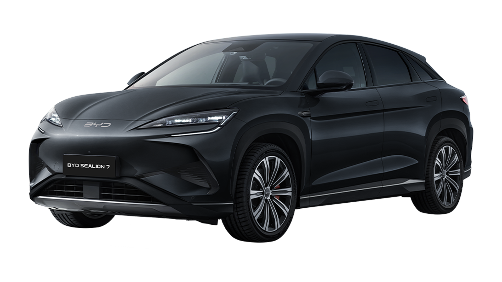
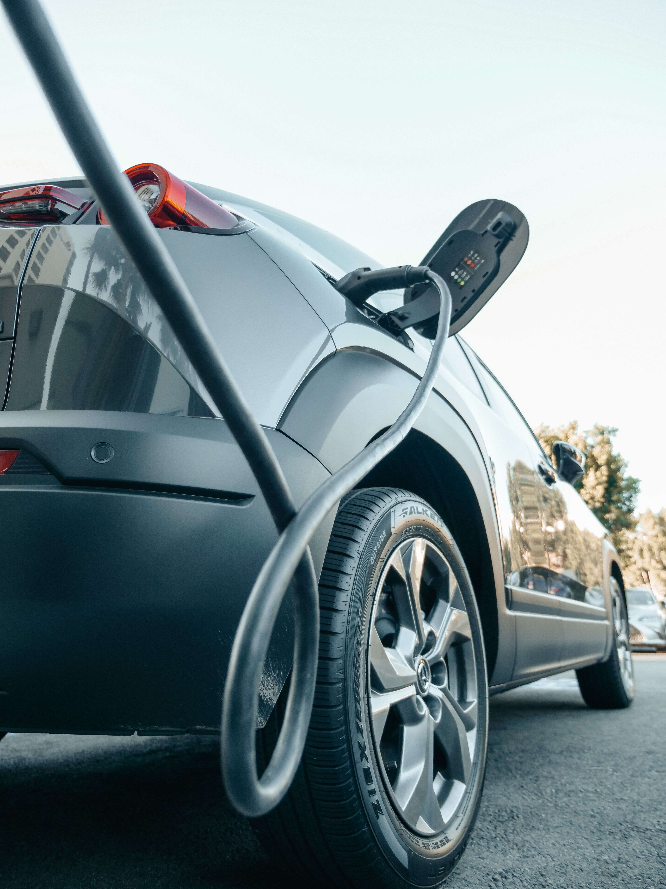
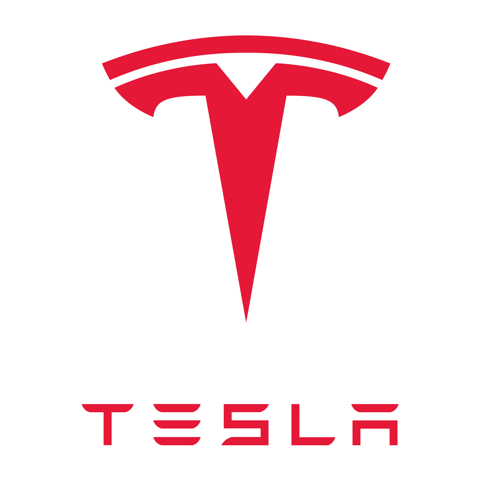
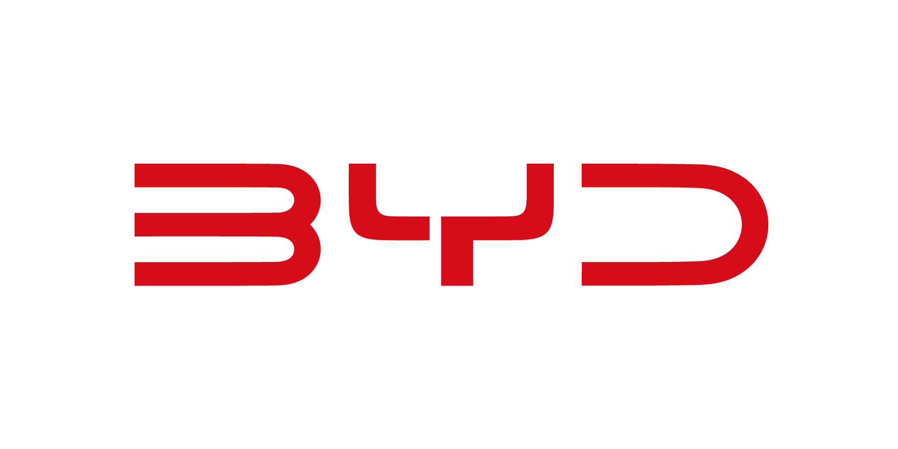
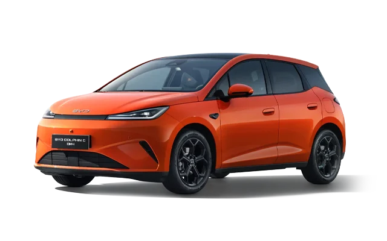
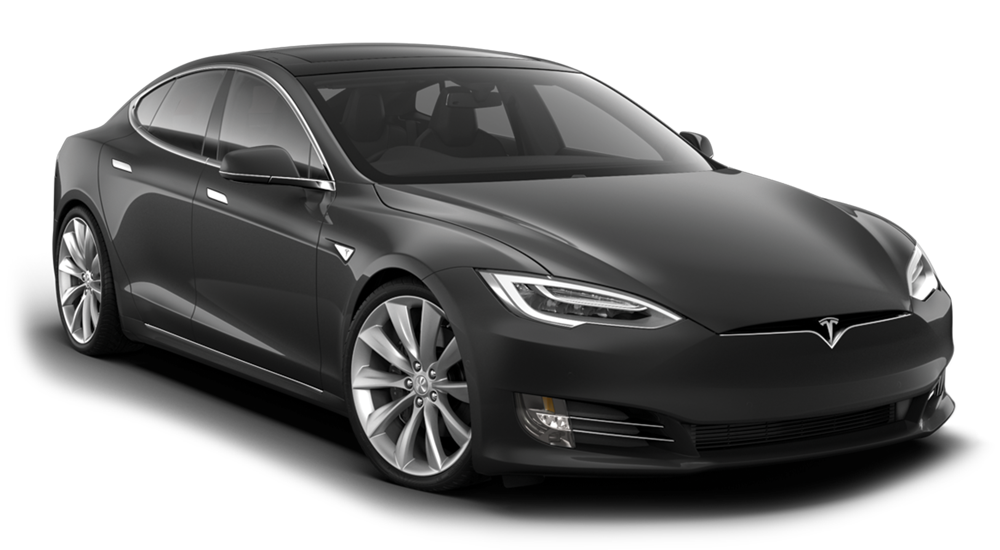

Studium przypadku: polityka przemysłowa | GVC | korzyści skali | bariery wejścia

dostawy (BEV) 2025
4%marża netto
sprzedaż NEV (BEV+PHEV), 2025
4,1%marża netto

LFP
Najtańsza chemia ogniw (dominacja BYD) $/kWh
Chiny
Średnia cena pakietu na rynku chińskim $/kWh
Świat
Średnia globalna cena pakietu baterii $/kWh
NMC
Ogniwa niklowo-manganowo-kobaltowe $/kWh



Nadpodaż przechodzi w wojnę cenową. Porównanie marży brutto oraz marży netto pokazuje, że mimo drastycznych obniżek cen obie firmy utrzymują zbliżoną rentowność operacyjną.
Stanowisko grupy: przewagę w EV daje relacja firma–ekosystem, nie sama firma
kapitał, ziemia, popyt, ochrona rynku
chemia, dostawcy, logistyka, skala
strategia, produkt, oprogramowanie
Czy otwarcie fabryki Tesli w Szanghaju w 2019 r. było sukcesem chińskiej polityki przemysłowej, czy początkiem uzależnienia Tesli od Chin?

Gdzie kończy się wspieranie własnego przemysłu, a zaczyna nieuczciwa konkurencja? Czy cła na chińskie auta w UE i USA chronią lokalne firmy, czy przede wszystkim podnoszą ceny dla konsumentów?

Czy rozwój AI, oprogramowania i robotyki pozwoli Tesli odzyskać przewagę, czy o sukcesie nadal będą decydować koszty i skala produkcji, w których mocny jest BYD?
Chińskie marki odpowiadają za ok. 60% światowej sprzedaży aut elektrycznych, a Chiny produkują ok. 3/4 z 22 mln aut.
Eksport chińskich aut elektrycznych podwoił się i przekroczył 2,5 mln sztuk. Poza trzema największymi rynkami 55% sprzedaży stanowią auta importowane z Chin - w 2020 r. było to mniej niż 5%.
Przewaga Chin wynika ze skali produkcji i niższych kosztów.